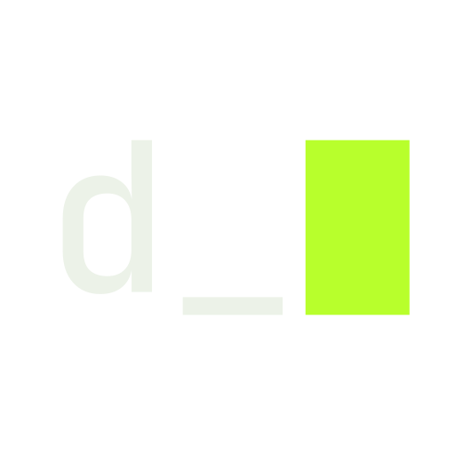

Derigava/Android

TECH / TOOLS
ByeBye TGWS Proxy
Локальный MTProto-прокси и DPI-bypass в одном приложении
MODULES 02 / INDEPENDENT
MODULE 01
[OK] · ROUTE UP
TG-WS
MTProto-прокси для Telegram · 127.0.0.1:1443 · Cloudflare CDN
MODULE 02
[OK] · VPN / SOCKS5
ByeByeDPI
DPI-bypass без root · системный VPN или SOCKS5 · фильтр приложений
ОДНО ПРИЛОЖЕНИЕ · ДВА НЕЗАВИСИМЫХ МОДУЛЯ
ANDROID 7+·ARM64·БЕЗ ROOT·АВТОПОДБОР СТРАТЕГИЙ